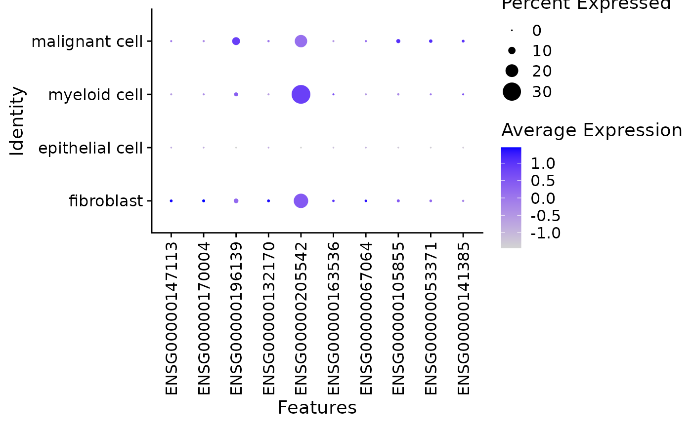

Introduction
This vignettes provides a quick introduction to the
{laminr} workflow. For more details about how
{laminr} works see
vignette("concepts_features", package = "laminr").
Installation
Install {laminr} from CRAN using:
install.packages("laminr")You will also need to install the lamindb Python
package:
Some functionality requires additional packages. You will be prompted to install them as needed or you can install them all now with:
install.packages("laminr", dependencies = TRUE)See the “Initial setup” section of
vignette("concepts_features", package = "laminr") for more
details.
Connecting to LaminDB
Load {laminr} to get started.
Connect to the default instance
The default LaminDB instance is set using the lamin CLI
on the command line:
lamin connect <owner>/<name>Once a default instance has been set, connect to it with {laminr}:
db <- connect()
#> ! schema module 'bionty' is not installed → no access to its labels & registries (resolve via `pip install bionty`)
#> → connected lamindb: laminlabs/cellxgene
db
#> cellxgene
#> Core registries
#> $Run
#> $User
#> $Param
#> $ULabel
#> $Feature
#> $Storage
#> $Artifact
#> $Transform
#> $Collection
#> $FeatureSet
#> $ParamValue
#> $FeatureValue
#> Additional modules
#> biontyNote
Only the default instance can create new records. This tutorial assumes you have access to an instance where you have permission to add data.
Connect to other instances
It is possible to connect to non-default instances by providing a
slug to the connect() function. Instances connected to in
this way can be used to query data but cannot make any changes. Connect
to the public CELLxGENE instance:
cellxgene <- connect("laminlabs/cellxgene")
cellxgene
#> cellxgene
#> Core registries
#> $Run
#> $User
#> $Param
#> $ULabel
#> $Feature
#> $Storage
#> $Artifact
#> $Transform
#> $Collection
#> $FeatureSet
#> $ParamValue
#> $FeatureValue
#> Additional modules
#> biontyTrack data provenance
LaminDB can track which scripts or notebooks were used to create data. Starts the tracking process:
db$track("I8BlHXFXqZOG0000", path = "laminr.Rmd")Tip
The ID should be obtained by running
db$track(path = "your_file.R") and copying the ID from the
output.
Download a dataset
Artifacts are objects that contain measurements as well as associated metadata.
artifact <- cellxgene$Artifact$get("7dVluLROpalzEh8mNyxk")
artifact
#> Artifact(uid='7dVluLROpalzEh8mNyxk', description='Renal cell carcinoma, pre aPD1, kidney Puck_200727_12', key='cell-census/2023-12-15/h5ads/02faf712-92d4-4589-bec7-13105059cf86.h5ad', id=1742, run_id=22, hash='YNYuokfAoDFxdaRILjmU9w', size=13997860, suffix='.h5ad', storage_id=2, version='2023-12-15', _accessor='AnnData', is_latest=TRUE, transform_id=16, _hash_type='md5-n', created_at='2024-01-11T09:13:23.143694+00:00', created_by_id=1, updated_at='2024-01-24T07:17:47.009288+00:00', visibility=1, n_observations=17612, _key_is_virtual=FALSE)Tip
You can view information about this dataset on Lamin Hub https://lamin.ai/laminlabs/cellxgene/artifact/7dVluLROpalzEh8mNyxk. It can also be used to search for other CELLxGENE datasets.
So far only retrieved the metadata of this artifact has been retrieved. To download the data itself, run:
adata <- artifact$load()
#> | | | 0% | | | 1% | |= | 1% | |= | 2% | |== | 2% | |== | 3% | |=== | 4% | |=== | 5% | |==== | 5% | |==== | 6% | |===== | 6% | |===== | 7% | |===== | 8% | |====== | 8% | |====== | 9% | |======= | 9% | |======= | 10% | |======= | 11% | |======== | 11% | |======== | 12% | |========= | 12% | |========= | 13% | |========= | 14% | |========== | 14% | |========== | 15% | |=========== | 15% | |=========== | 16% | |============ | 16% | |============ | 17% | |============ | 18% | |============= | 18% | |============= | 19% | |============== | 19% | |============== | 20% | |============== | 21% | |=============== | 21% | |=============== | 22% | |================ | 22% | |================ | 23% | |================= | 24% | |================= | 25% | |================== | 25% | |================== | 26% | |=================== | 27% | |=================== | 28% | |==================== | 28% | |==================== | 29% | |===================== | 29% | |===================== | 30% | |===================== | 31% | |====================== | 31% | |====================== | 32% | |======================= | 32% | |======================= | 33% | |======================= | 34% | |======================== | 34% | |======================== | 35% | |========================= | 35% | |========================= | 36% | |========================== | 36% | |========================== | 37% | |========================== | 38% | |=========================== | 38% | |=========================== | 39% | |============================ | 39% | |============================ | 40% | |============================ | 41% | |============================= | 41% | |============================= | 42% | |============================== | 42% | |============================== | 43% | |=============================== | 44% | |=============================== | 45% | |================================ | 45% | |================================ | 46% | |================================= | 47% | |================================= | 48% | |================================== | 48% | |================================== | 49% | |=================================== | 49% | |=================================== | 50% | |=================================== | 51% | |==================================== | 51% | |==================================== | 52% | |===================================== | 52% | |===================================== | 53% | |===================================== | 54% | |====================================== | 54% | |====================================== | 55% | |======================================= | 55% | |======================================= | 56% | |======================================== | 56% | |======================================== | 57% | |======================================== | 58% | |========================================= | 58% | |========================================= | 59% | |========================================== | 59% | |========================================== | 60% | |========================================== | 61% | |=========================================== | 61% | |=========================================== | 62% | |============================================ | 62% | |============================================ | 63% | |============================================= | 64% | |============================================= | 65% | |============================================== | 65% | |============================================== | 66% | |=============================================== | 67% | |=============================================== | 68% | |================================================ | 68% | |================================================ | 69% | |================================================= | 69% | |================================================= | 70% | |================================================= | 71% | |================================================== | 71% | |================================================== | 72% | |=================================================== | 72% | |=================================================== | 73% | |=================================================== | 74% | |==================================================== | 74% | |==================================================== | 75% | |===================================================== | 75% | |===================================================== | 76% | |====================================================== | 76% | |====================================================== | 77% | |====================================================== | 78% | |======================================================= | 78% | |======================================================= | 79% | |======================================================== | 79% | |======================================================== | 80% | |======================================================== | 81% | |========================================================= | 81% | |========================================================= | 82% | |========================================================== | 82% | |========================================================== | 83% | |========================================================== | 84% | |=========================================================== | 84% | |=========================================================== | 85% | |============================================================ | 85% | |============================================================ | 86% | |============================================================= | 87% | |============================================================= | 88% | |============================================================== | 88% | |============================================================== | 89% | |=============================================================== | 89% | |=============================================================== | 90% | |=============================================================== | 91% | |================================================================ | 91% | |================================================================ | 92% | |================================================================= | 92% | |================================================================= | 93% | |================================================================= | 94% | |================================================================== | 94% | |================================================================== | 95% | |=================================================================== | 95% | |=================================================================== | 96% | |==================================================================== | 96% | |==================================================================== | 97% | |==================================================================== | 98% | |===================================================================== | 98% | |===================================================================== | 99% | |======================================================================| 99% | |======================================================================| 100%
adata
#> AnnData object with n_obs × n_vars = 17612 × 23254
#> obs: 'n_genes', 'n_UMIs', 'log10_n_UMIs', 'log10_n_genes', 'Cell_Type', 'cell_type_ontology_term_id', 'organism_ontology_term_id', 'tissue_ontology_term_id', 'assay_ontology_term_id', 'disease_ontology_term_id', 'self_reported_ethnicity_ontology_term_id', 'development_stage_ontology_term_id', 'sex_ontology_term_id', 'donor_id', 'is_primary_data', 'suspension_type', 'cell_type', 'assay', 'disease', 'organism', 'sex', 'tissue', 'self_reported_ethnicity', 'development_stage'
#> var: 'gene', 'n_beads', 'n_UMIs', 'feature_is_filtered', 'feature_name', 'feature_reference', 'feature_biotype'
#> uns: 'Cell_Type_colors', 'schema_version', 'title'
#> obsm: 'X_spatial'You can see that this artifact contains an AnnData
object.
Work with the data
Once you have loaded a dataset you can perform any analysis with it as you would normally. Here, marker genes are calculated for each of the provided cell type labels using {Seurat}.
# Create a Seurat object
seurat <- SeuratObject::CreateSeuratObject(
counts = as(Matrix::t(adata$X), "CsparseMatrix"),
meta.data = adata$obs,
)
# Set cell identities to the provided cell type annotation
SeuratObject::Idents(seurat) <- "Cell_Type"
# Normalise the data
seurat <- Seurat::NormalizeData(seurat)
#> Normalizing layer: counts
# Test for marker genes (the output is a data.frame)
markers <- Seurat::FindAllMarkers(
seurat,
features = SeuratObject::Features(seurat)[1:100] # Only test a few features for speed
)
#> Calculating cluster Epithelial
#> Calculating cluster Fibroblast
#> For a (much!) faster implementation of the Wilcoxon Rank Sum Test,
#> (default method for FindMarkers) please install the presto package
#> --------------------------------------------
#> install.packages('devtools')
#> devtools::install_github('immunogenomics/presto')
#> --------------------------------------------
#> After installation of presto, Seurat will automatically use the more
#> efficient implementation (no further action necessary).
#> This message will be shown once per session
#> Calculating cluster Myeloid
#> Calculating cluster Tumor
#> Warning: The following tests were not performed:
#> Warning: When testing Epithelial versus all:
#> Cell group 1 has fewer than 3 cells
# Display the marker genes
knitr::kable(markers)| p_val | avg_log2FC | pct.1 | pct.2 | p_val_adj | cluster | gene | |
|---|---|---|---|---|---|---|---|
| ENSG00000147113 | 0.0000001 | 1.8228103 | 0.019 | 0.005 | 0.0011654 | Fibroblast | ENSG00000147113 |
| ENSG00000170004 | 0.0000002 | 2.5663044 | 0.021 | 0.006 | 0.0036485 | Fibroblast | ENSG00000170004 |
| ENSG00000196139 | 0.0000003 | -0.8318130 | 0.053 | 0.110 | 0.0058749 | Fibroblast | ENSG00000196139 |
| ENSG00000132170 | 0.0006719 | 1.7151510 | 0.020 | 0.009 | 1.0000000 | Fibroblast | ENSG00000132170 |
| ENSG00000205542 | 0.0007360 | 0.6442683 | 0.230 | 0.195 | 1.0000000 | Fibroblast | ENSG00000205542 |
| ENSG00000163536 | 0.0025157 | 1.8914687 | 0.012 | 0.004 | 1.0000000 | Fibroblast | ENSG00000163536 |
| ENSG00000067064 | 0.0063090 | 1.2509162 | 0.014 | 0.006 | 1.0000000 | Fibroblast | ENSG00000067064 |
| ENSG00000105855 | 0.0068491 | -0.5412708 | 0.022 | 0.041 | 1.0000000 | Fibroblast | ENSG00000105855 |
| ENSG00000205542.1 | 0.0000002 | 1.3623005 | 0.310 | 0.195 | 0.0046479 | Myeloid | ENSG00000205542 |
| ENSG00000196139.1 | 0.0015658 | -0.5898982 | 0.040 | 0.108 | 1.0000000 | Myeloid | ENSG00000196139 |
| ENSG00000196139.2 | 0.0000000 | 0.7939631 | 0.111 | 0.050 | 0.0000224 | Tumor | ENSG00000196139 |
| ENSG00000205542.2 | 0.0000001 | -0.8585382 | 0.193 | 0.247 | 0.0013456 | Tumor | ENSG00000205542 |
| ENSG00000147113.1 | 0.0000018 | -1.4976270 | 0.005 | 0.016 | 0.0415774 | Tumor | ENSG00000147113 |
| ENSG00000170004.1 | 0.0000073 | -2.2898276 | 0.006 | 0.018 | 0.1686987 | Tumor | ENSG00000170004 |
| ENSG00000105855.1 | 0.0003828 | 0.7197716 | 0.041 | 0.019 | 1.0000000 | Tumor | ENSG00000105855 |
| ENSG00000053371 | 0.0038080 | 0.8347505 | 0.029 | 0.014 | 1.0000000 | Tumor | ENSG00000053371 |
| ENSG00000141385 | 0.0058269 | 1.0575502 | 0.019 | 0.007 | 1.0000000 | Tumor | ENSG00000141385 |
| ENSG00000132170.1 | 0.0072852 | -1.3878878 | 0.009 | 0.017 | 1.0000000 | Tumor | ENSG00000132170 |
| ENSG00000163536.1 | 0.0076905 | -1.8629158 | 0.004 | 0.010 | 1.0000000 | Tumor | ENSG00000163536 |
# Plot the marker genes
Seurat::DotPlot(seurat, features = unique(markers$gene)) +
ggplot2::theme(axis.text.x = ggplot2::element_text(angle = 90, vjust = 0.5))
#> Warning: Scaling data with a low number of groups may produce misleading
#> results
Finish tracking
End the tracking run to generate a timestamp:
db$finish()Save notebooks and code
Save the tracked notebook to your instance:
- Render the notebook to HTML (not needed for
.Rscripts)
In RStudio, click the “Knit” button
-
OR From the command line, run:
-
OR Use the
rmarkdownpackage in R:rmarkdown::render("laminr.Rmd")
- Save it to your LaminDB instance using the
laminCLI: